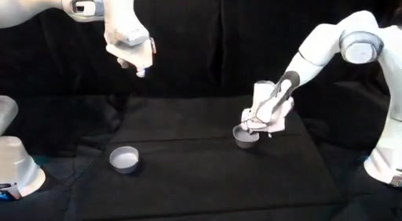
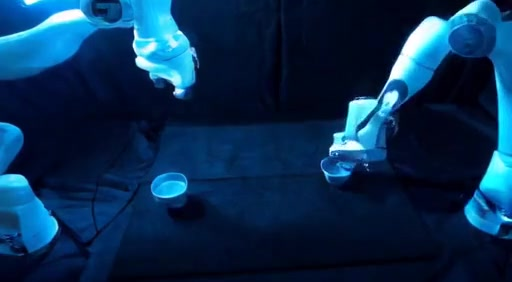
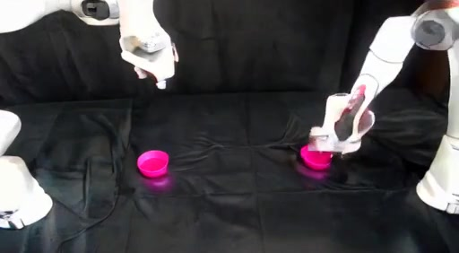
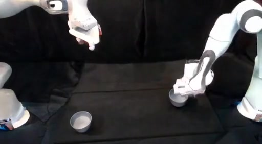
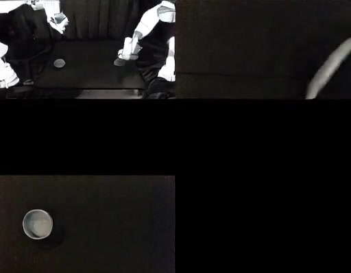

CRAFT: Video Diffusion for Bimanual Robot Data Generation
Bimanual robot learning is fundamentally bottlenecked by the cost and narrow visual diversity of real-world data. CRAFT (Canny-guided Robot Data Generation using Video Diffusion Transformers) synthesizes photorealistic, temporally coherent, action-consistent demonstrations by conditioning a video diffusion model on Canny-edge control videos extracted from simulator trajectories, a real-world reference image, and language instructions. Starting from only a handful of real-world demonstrations, CRAFT generates a large, visually diverse training set spanning seven augmentation axes — lighting, background, object color, object pose, camera viewpoint, wrist+third-person views, and cross-embodiment transfer — without replaying any demonstrations on real hardware (Sim2Real). CRAFT consistently outperforms augmentation-specific baselines across all conditions in simulation and real-world hardware experiments.






Fig. 2: (1) Real2Sim expansion → (2) Canny-conditioned generation → (3) multi-axis augmented dataset → (4) Dgen for ACT policy training.
- vs. depth maps: depth retains too much scene detail, limiting visual diversity in generation.
- vs. skeleton pose: only captures arm structure without object information.
- Canny edges: preserve robot-arm + object contours while discarding low-level sim texture — enabling free variation of lighting, color, and background via prompting.
- Edge thickening + connectivity post-processing bridge fragmented edges for cleaner structural guidance.
Lift Roller & Stack Bowls
vs. 61% Collected Target
vs. 46.7% VISTA baseline
vs. 58.3% SAM3 baseline
- Contributions: unified 7-axis bimanual data generation pipeline.
- Cross-embodiment (xArm7 → Franka) without any target-robot data collection.
- Generated demos paired with action labels — fully action-consistent.
- Strong real-world and simulation gains over per-condition baselines.
Each axis modifies either the reference image If, the language instruction ℓ, or the source robot trajectory — while keeping Canny control Vc fixed to preserve motion structure.
Mean success % — Lift Roller / Place Cans / Stack Bowls, 20 trials each (Table III)
Baselines: Color Jitter (Lighting), RoboEngine (Background), VISTA (Camera), SAM3 (Object Color). Canny edges nearly 2× raw sim success rate. No public baseline for Wrist+3rd Person.